Introduction
Today I want to talk about two systems in more detail: shinobi duels and shinobi lifestyles.These two mechanics are closely connected, because both exist for the same reason: Naruto characters should not feel like normal CK3 characters with a few renamed traits. A shinobi should have their own progression, their own combat identity, and their own way of influencing the world.
Why a Separate Duel System?
In Naruto, a single powerful character can decide the outcome of a battle. A small squad can change the fate of a country. A duel between two shinobi can matter more than thousands of ordinary soldiers.Because of that, normal CK3 combat is not enough for this setting.
I wanted shinobi combat to feel more personal, more tactical, and more character-driven. When two shinobi meet, the player should see the confrontation, make choices, and feel that the characters themselves matter.
That is why the mod uses a separate shinobi duel system. Each side of the duel can have up to 4 shinobi. So it can be 1 vs 1, 1 vs 3, 3 vs 2, 4 vs 4 etc
When Can a Duel Happen?
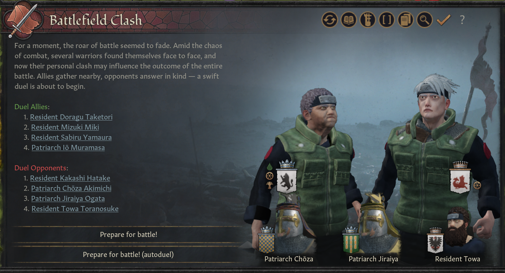
- during wars
- during missions
- during chuunin exams
- during friendly training
These are the core cases I want to support first, because they are the most important for Naruto-style gameplay.
However, the system is also designed to be expandable. In the future, I would like to use shinobi duels in more situations, such as murder attempts, special story events, rivalries, and possibly even as replacements for some vanilla duel events where it makes sense.
War Duel
During wars, shinobi battles can happen every three days.If both sides have shinobi knights, they may clash in a shinobi duel.
If one side still has shinobi knights while the other side has none, the unprotected side will start losing 5% of its soldiers every three days. This represents what happens when an army is exposed to enemy shinobi without anyone capable of stopping them.
If you do not want to play every shinobi duel manually, you can use Autoduel to resolve the fight instantly.
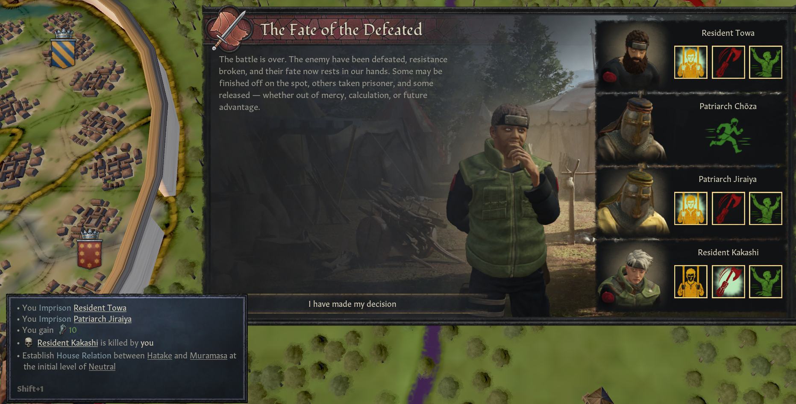
Shinobi Stats
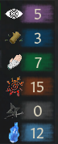
These stats are:
- Genjutsu
- Ninjutsu
- Taijutsu
- Sealing
- Kenjutsu
- Chakra Reserves
They are the main foundation of shinobi combat.
Each stat determines the basic power of attacks of the same type. For example, Ninjutsu affects the base strength of Ninjutsu attacks, Taijutsu affects Taijutsu attacks, and so on.
The same stat also helps a character defend against enemy attacks of that type. A character with high Genjutsu will be better at resisting Genjutsu-based attacks. A character with high Taijutsu will be better at dealing with Taijutsu-based pressure.
Chakra Reserves work differently. This stat determines how much chakra a character starts with at the beginning of a duel.
A character can be terrifying in one area and vulnerable in another. A Genjutsu specialist, a Taijutsu fighter, a Kenjutsu user, and a sealing expert should all feel different in actual combat.
The goal is to make shinobi battles depend not only on overall strength, but also on matchups, specialization, and resource management. If a character runs out of chakra, they may have to switch from chakra-based attacks to Kenjutsu/Taijutsu instead.
Shinobi Lifestyles

1) Genjutsu
2) Ninjutsu
3) Taijutsu
4) Kenjutsu
5) Medical Ninjutsu
6) Fuuinjutsu
7) Chakra Transformation
Each character can progress through one vanilla CK3 lifestyle and one shinobi lifestyle at the same time. Vanilla lifestyles still define a character as a ruler, diplomat, schemer, warrior, or scholar, while shinobi lifestyles define their combat style and ninja specialization.
1) Genjutsu
Genjutsu has low direct damage, but focuses heavily on debuffs and control. It can weaken enemy attacks, increase the chance of critical damage against the target, or even force the enemy to skip a turn.The first Genjutsu tree is offensive, the second is defensive, and the third is forbidden. The forbidden tree is where things become more dangerous and strange: it can make enemies attack their allies, waste chakra, or even hand over part of their money.
Genjutsu may look weak at first, but if you fully invest into the lifestyle, its damage may stop looking like a joke.
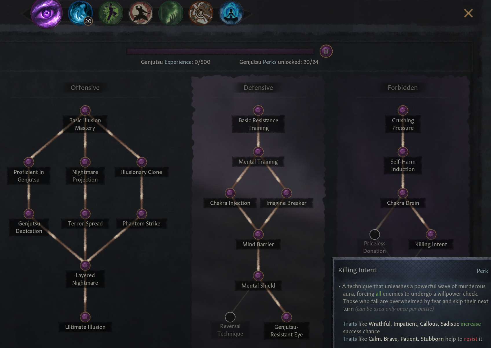
2) Ninjutsu
Ninjutsu is the most common shinobi lifestyle.The first tree is universal and improves many different aspects of Ninjutsu little by little. The second tree allows characters to unlock chakra natures. At release, there will be five basic chakra natures: Fire, Water, Wind, Lightning, and Earth.
If a character has an affinity for one of these natures, they will unlock that nature first.
The third tree is related to hidden techniques. It will not be available at release, but in the future it is planned to unlock unique techniques such as Chidori or Rasengan.
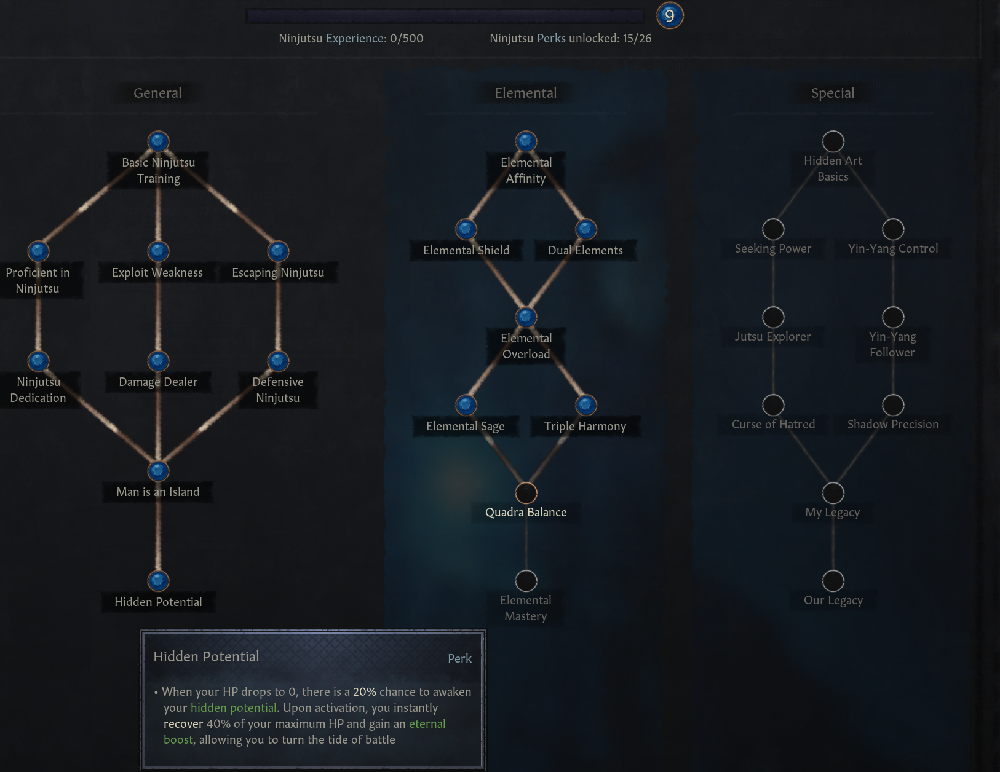
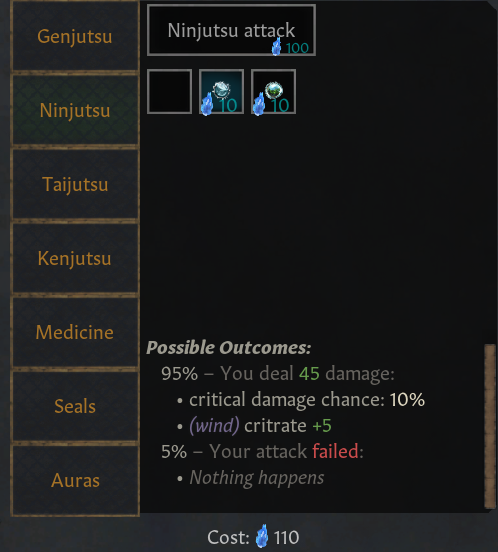
3) Taijutsu
Taijutsu does not require chakra, which means it can save you at any point in a duel.The first tree focuses on strength, while the second focuses on agility. These affect different things such as dodging, escaping when losing a fight, acting first in combat, and improving Taijutsu attacks in general.
The third tree is the Eight Gates. Opening a gate can make a character much stronger for a limited time. Once that time ends, the character becomes weakened, and you may have to choose whether to accept the penalty or open the next gate to keep fighting.
But be careful: opening the Eighth Gate will kill you, even if it makes you stronger than the Hokage.
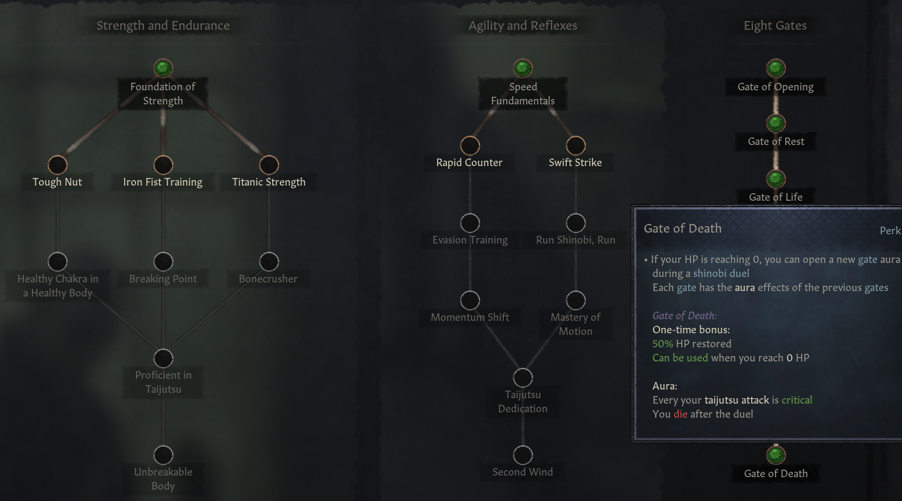
4) Kenjutsu
Kenjutsu is another attack type that does not normally require chakra.The first tree universally improves Kenjutsu attacks. The second tree allows characters to combine Kenjutsu with chakra nature, making their attacks more powerful but also causing them to consume chakra.
Kenjutsu also has its own advantages over Taijutsu, so it is not just another “no chakra” option.
The third tree is still in development. The current idea is that it will focus on mastering special weapons, such as the Seven Swords of the Mist or the weapons of the Sage of Six Paths.
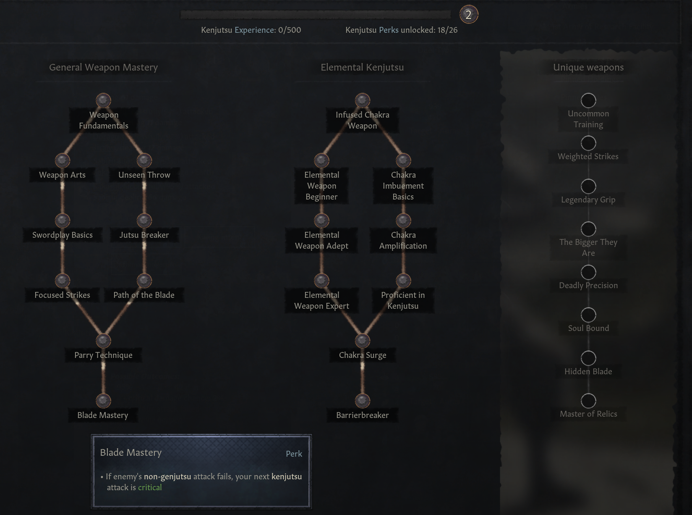
5) Medical Ninjutsu
Medical Ninjutsu is focused on healing, poison, support, and dangerous body-related techniques.The first tree allows characters to heal allies, poison enemies, remove poison, use Byakugou, and perform other medical techniques.
The second tree combines Medical Ninjutsu with Taijutsu, allowing a character to fight directly while using medical knowledge as part of their combat style.
The third tree is forbidden medicine. In the future, this path may allow extremely dangerous techniques, potentially even bringing the dead back to life.
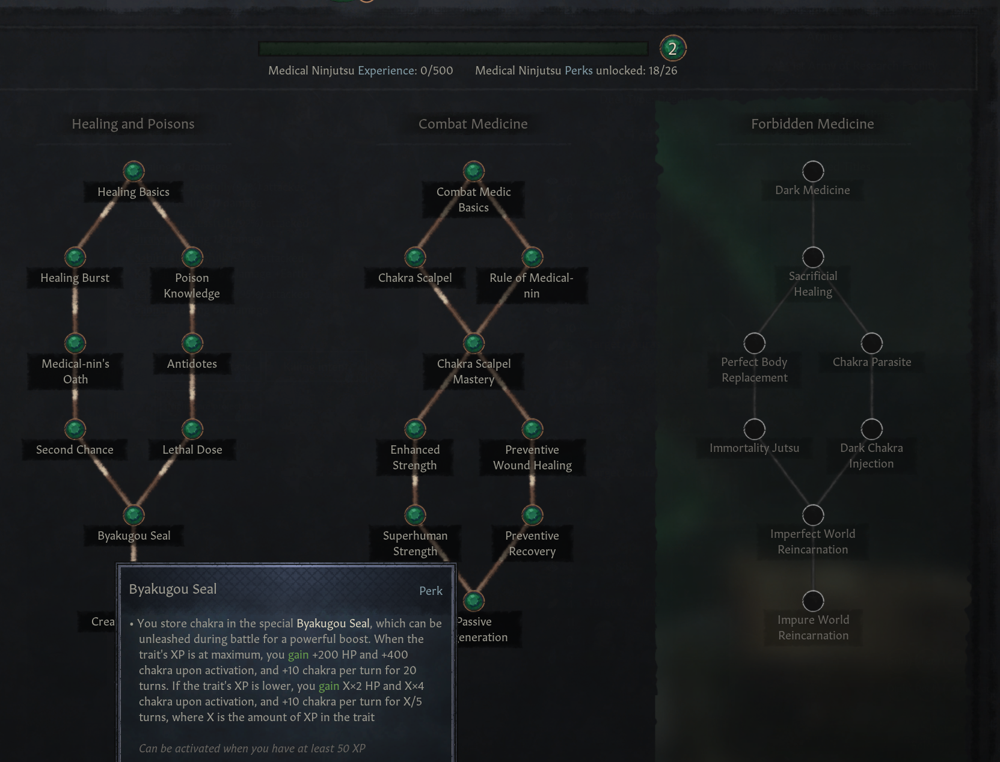
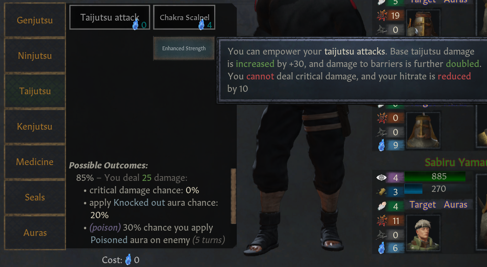
6) Fuuinjutsu
Fuuinjutsu is currently the most work-in-progress lifestyle, mostly because it is the most difficult one to code.At the moment, one tree is implemented. It focuses on sealing-based attacks, similar to Tenten’s fighting style. The final perk of this tree can even allow a character to seal tailed beasts.
The other two trees are still in development. One is planned to focus on barriers, while the other is connected to animal summons. I am still deciding how exactly summons should work in CK3, and whether summoned creatures should exist as actual characters or be represented in another way.
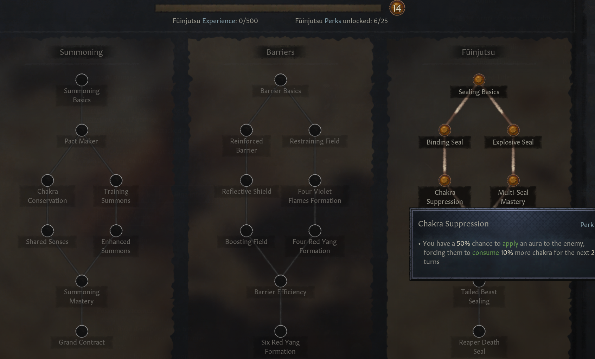
7) Chakra Transformation
Chakra Transformation is mostly a foundation for future content.At the moment, it is not as necessary as the other lifestyles, but it will eventually support some of the more unusual power systems in the setting.
Its three planned trees are:
- Otsutsukification, based on Boruto content;
- Star Chakra, based on the Hidden Star Village filler arc;
- Sage Modes.
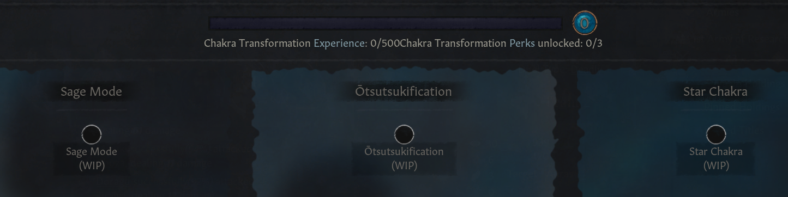
Conclusion
In the end, every shinobi build comes with trade-offs.Spread your resources too widely, and you may become mediocre at everything. Focus too hard on one field, and you may leave yourself vulnerable to other attack types — or run out of chakra when you need it most.
So plan carefully, and good luck building your shinobi.
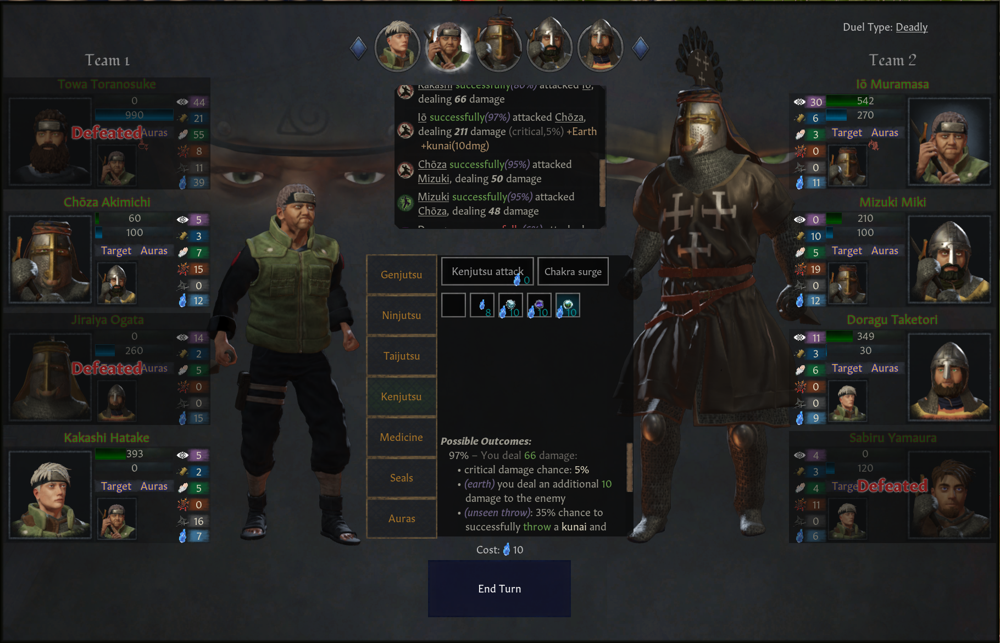